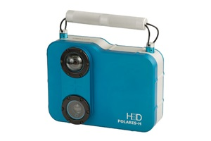
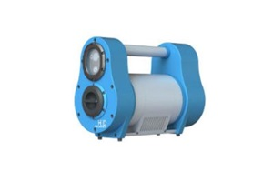

실시간 방사선원 위치추적
CGiTEC
New Idea for Radiation Safety and Applications
POLARIS
GAMMA-RAY IMAGING SPECTROMETERS
CdZnTe 실시간 방사선 이미징 검출기
POLARIS 실시간 방사선 이미징 이란 ?
3-D Position Sensing 기술을 이용한 실시간 방사선 이미징 장치인 POLARIS Series 검출기는 우수한 에너지 분해능과 자동화된 스펙트럼 분석으로 방사선의 종류와 세기를 정확하게 판별하는 최첨단의 상온반도체 방사선 검출기입니다. 볼 수 없는 감마선 (invisible gamma-ray)을 실시간으로 시각화하여 방사선 작업자가 방사선 위험에 효과적으로 대처할 수 있도록 직관적인 정보를 제공합니다.
3-D Position Sensing 기반 CdZnTe 상온반도체 검출기 시리즈

H Series
Industrial Imaging Spectrometer

P Series
Directional Gamma-Ray Imaging Spectrometer
S Series
Permanent-Mount SpectrometerM Series
Exclusive Medical Field Spectrometer활 용 분 야
원자력발전소 및 방사성 폐기물 안전관리
- H Series는 현재 미국 내 전체 원자력발전소 중 ~60% 이상이 방사선 안전을 위해 활발하게 사용하고 있습니다.
- H Series 와 P Series 는 방사선 안전을 위한 가장 훌륭한 솔류션입니다. 원자력발전소와 같은 방사선 환경에서 사용되는 [ 16가지 예제 (준비중) ]를 확인해보세요.
- S Series 는 특정위치에서 방사선원의 변화를 지속적으로 모니터링 하는데 최적화되어 있습니다.
테러방지를 위한 공항 및 항만 보안검색
- 3-D Position Sensing 상온반도체 검출기 Series는 무게가 2-3 kg에 불과하여 운반이 용이한 장치입니다. 그러나 HPGe급에 버금가는 에너지분해능을 갖고 있어 감마선원의 종류와 위치를 실수없이 찾을 수 있습니다.
- 미국 DOD DTRA 의 재정지원을 받아 개발된 3-D Position Sensing 상온반도체 검출기 시리즈는 보안검색에 최고의 솔류션을 제공합니다.
환경방사선 추적 및 감시
- POLARIS 검출기 Series는 3-D Position Sensing 기반의 감마선 영상기법을 개발하여 검출기가 실시간으로 감마선 영상을 만들 수 있도록 감마선 이미징 시간을 획기적으로 단축하였습니다.
- POLARIS 검출기는 후쿠시마 현지에서 직접 측정실험을 수행하여 환경방사선의 추적 및 감시에 용이함을 증명하였습니다. 생생한 [ 후쿠시마 지역 측정자료 (준비중) ]를 확인해보세요.
의료방사선 안전관리
- 방사선은 산업현장이나 의료분야 등 광범위하게 활용되고 있지만 안전 측면에서는 여전히 매우 많은 점들이 간과되고 있습니다.
- POLARIS 검출기는 의료현장에서 사용되고 있는 방사선을 사용자가 직관적으로 판단할 수 있도록 생생한 시각정보를 제공합니다. 이를 통해 환자뿐만 아니라 의사나 간호사 등 의료종사자가 방사선 피폭에 노출되지 않도록 방사선 안전의 최고 솔류션을 제공할 수 있습니다.